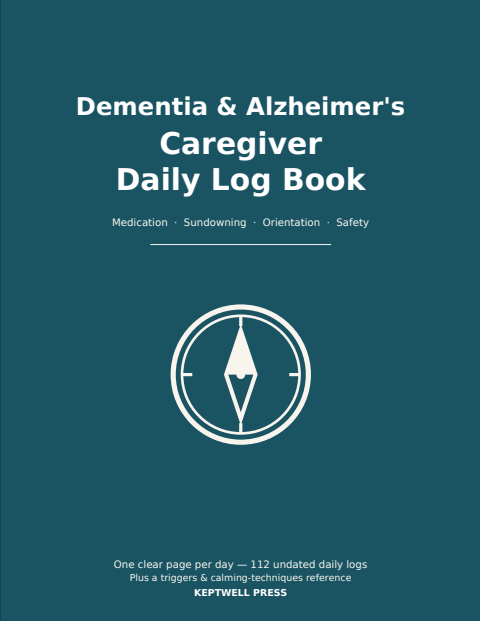
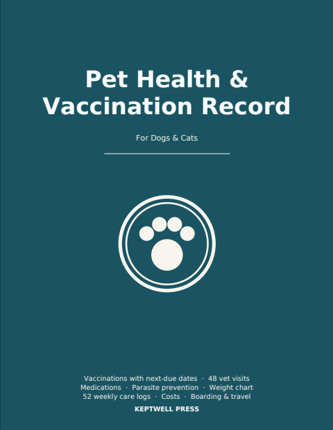

Available now

Caregiver Daily Log Book
One clear page per day: medications with times and doses, vitals, meals and fluids, sleep, mood, and space for the questions that make doctor visits count. Built for handoffs between family caregivers.
112 undated daily pages · master medication list · emergency contacts · 8.5 × 11 in · 120 pages
Buy on AmazonIn preparation

Mileage & Expense Log Book
For people who drive for work: every trip row captures the date, the odometer both ways, the miles and the business purpose — and expenses get their own pages instead of the margins. Month and year totals are already done by the time your tax preparer asks.
12 monthly blocks · 120 trips & 40 expenses a month · parking, tolls & maintenance logs · year-end worksheets · undated, start any month · 6 × 9 in · 120 pages
Published — the Amazon listing appears within a few days.
Medication Log Book
One open spread per week: every scheduled dose on the left with a box to tick as you go, and on the right the things a doctor actually asks about — missed doses and why, side effects, refills, and your questions.
52 undated weekly spreads · as-needed (PRN) log · allergy record · refill & appointment trackers · 8.5 × 11 in · 120 pages
In review at Amazon.
Dementia & Alzheimer's Caregiver Daily Log Book
The same daily page, rebuilt for dementia care: orientation and confusion, sundowning and agitation, and a ten-second wandering safety check. A reference page up front holds the triggers you've learned and the calming techniques that worked, so you stop re-discovering them every week.
112 undated daily pages · triggers & techniques reference · master medication list · profile with dementia type & stage · 8.5 × 11 in · 120 pages
Not yet submitted to Amazon.
Pet Health & Vaccination Record
Your dog or cat's whole medical history in one book you can hand to a kennel, a groomer or a new vet. The vaccination table leads the book and every row carries a next-due date, so "is she up to date?" takes five seconds.
Vaccinations with next-due dates · 48 vet visit records · medication & parasite logs · weight chart · costs · 52 weekly care logs · one pet per book · 8.5 × 11 in · 120 pages
Not yet submitted to Amazon.How these are made
No filler pages
Every page has a job. Where a page would run short, it gets more of what the book is for — not decoration to pad a page count.
Checked before printing
Each interior is generated and then machine-checked: exact page count, margins clear of the binding, fonts embedded, cover geometry correct.
Undated on purpose
Start in any week or month and get a full book. Skip days without wasting pages, and nothing goes stale on a shelf.